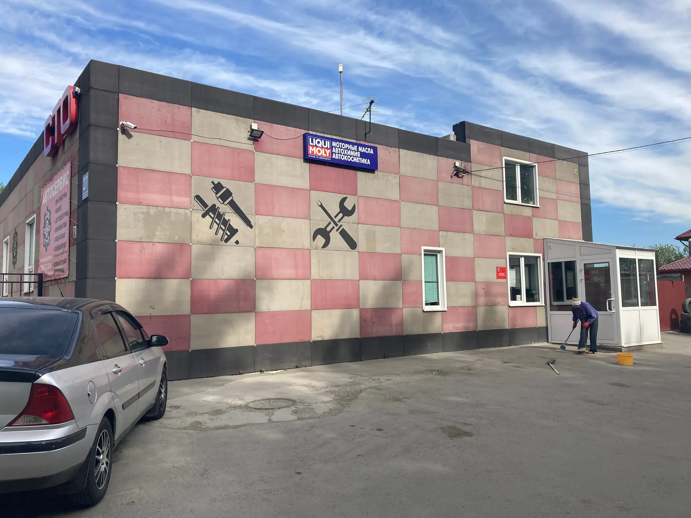
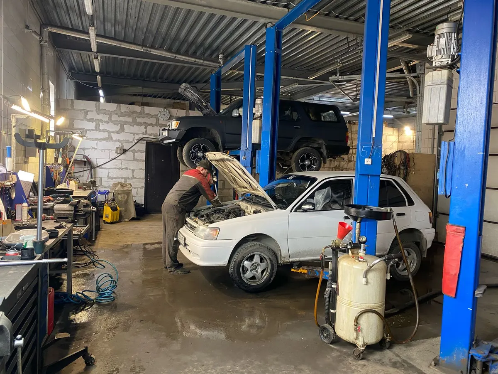
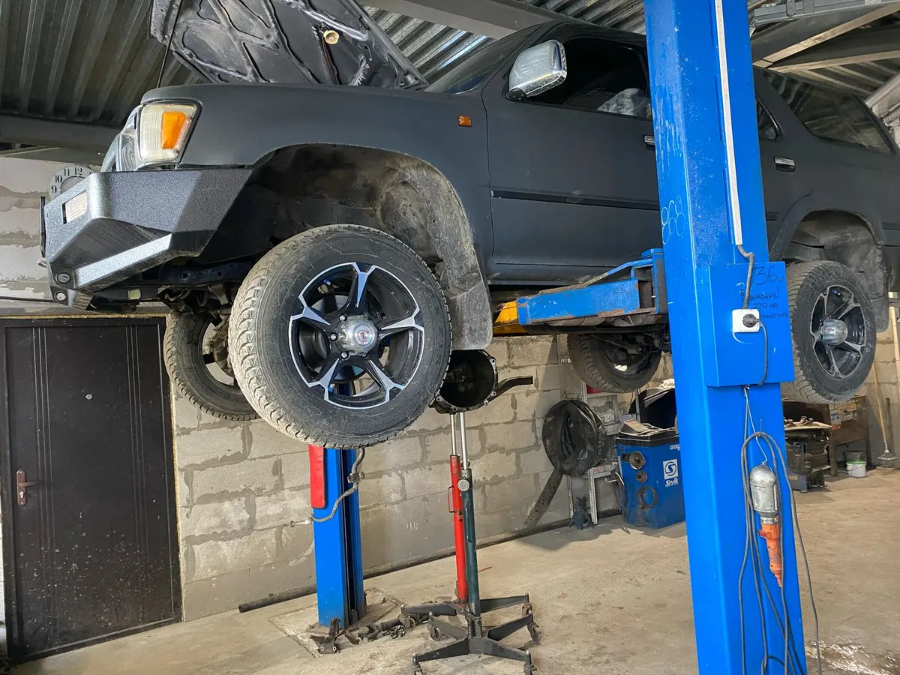
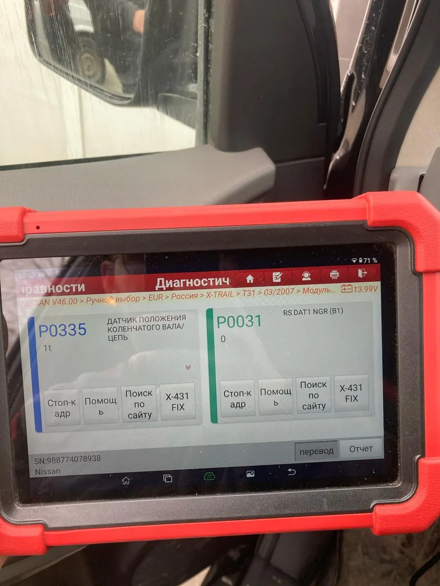

СТО на Баумана, 27 · ежедневно 9:00–19:00
Автосервис в Новосибирске: цены в прайсе заранее
Диагностика, ходовая, тормоза, развал-схождение, шиномонтаж. Работаем каждый день с 9 до 19, ремонт – после вашего согласия.
- Ежедневно 9:00–19:00, без выходных
- 10% от стоимости работ возвращаем бонусами
- Развал-схождение и шиномонтаж на месте

Что входит в визит
Входит
- Диагностика: что срочно, а что подождёт
- Стоимость работ – до начала ремонта
- Ремонт только после вашего согласия
- 10% от стоимости работ – бонусами на следующий визит
Отдельно, если нужно
- Запчасти и материалы – стоимость называем после диагностики
- Работы вне прайса – оценка по результатам диагностики
Цены на основные работы
Цены за работу без стоимости запчастей и материалов. По остальным работам называем стоимость после диагностики.
Диагностика
- Компьютерная диагностикасчитываем ошибки, объясняем, что срочно2 400 ₽
- Диагностика ходовойстойки, рычаги, сайлентблоки, шаровые, рулевые тяги1 600 ₽
- Диагностика электрикипроводка, стартер, генератор, свет2 400 ₽
Ремонт и обслуживание
- Развал-схождениедве оси2 720 ₽
- Замена тормозных колодокс обслуживанием суппортов2 160 ₽
- Шиномонтаж: комплекс4 колеса R15, монтаж и балансировка2 560 ₽
- Дозаправка кондиционерафреон и проверка работы системы3 008 ₽
- Промывка форсунок на стендетопливные форсункиот 560 ₽
- Замена маслапод ваш автомобильуточнить
Ремонт двигателей, МКПП и рулевых реек – после диагностики, стоимость называем по её результату.
Четыре шага, и ремонт начинается с вашего «да»
- 01
Записались
Позвонили или оставили заявку на сайте: марка, год и что беспокоит.
- 02
Диагностика и смета
Находим причину и называем стоимость работ.
- 03
Ремонт
Начинаем после вашего согласия.
- 04
Выдача
Отдаём автомобиль и начисляем бонусы.



Как мы работаем
Сначала диагностика
Находим причину и объясняем, что нужно сделать сейчас, а что потребуется позже.
Ремонт – с вашего согласия
Стоимость называем до начала работ.
Всё в одном месте
Диагностика, ходовая, тормоза, электрика, шиномонтаж и развал-схождение.
Бонусы за работы
10% от стоимости работ возвращается бонусами.
Отзывы с Яндекс.Карт
«Сделали диагностику ходовой, выявили неисправности и уже на следующий день все починили. Очень удобно, что сами запчасти нашли и заказали. Стоимость услуг адекватная»
Екатерина · 2 июля
«Хотела бы выразить благодарность, за качество проведенной работы. На протяжении многих лет, обслуживаюсь в данной организации. Сотрудники знают свою работу, четко объясняют причину , как ее устранить. Рекомендую для обслуживания автомобиля.»
Елена Кобзарчук · 4 мая
«Все быстро, качественно, вежливо! Часто пользуемся услугами данного СТО.»
анна а. · 15 июля 2024
Отзывы с карточки на Яндекс.Картах, без правок.
Частые вопросы
Как записаться?
Позвоните по телефону +7 (383) 335-74-16 или выберите время на сайте: заявка уйдёт в мессенджер.
Когда вы работаете?
Ежедневно с 9:00 до 19:00, без выходных.
Где находится сервис?
Новосибирск, ул. Баумана, 27. Рядом есть парковка.
Какая гарантия на работы?
Гарантия на работы – {{гарантия}}.
Запишитесь на диагностику на удобное время
- Адрес
- ул. Баумана, 27, Новосибирск
- Часы
- ежедневно 9:00–19:00
- Телефон
- +7 (383) 335-74-16